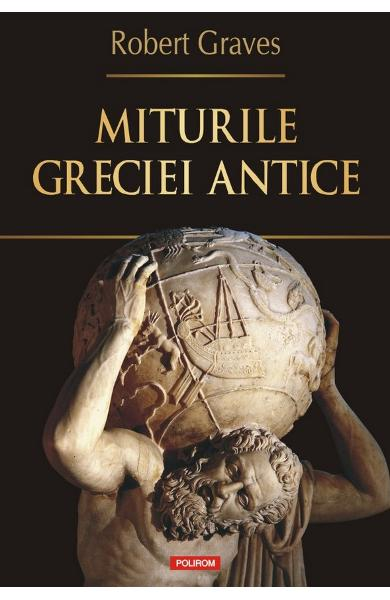

Miturile Greciei antice
Robert Graves
Stiati ca Atena, Afrodita si Hera au fost initial trei reprezentari ale aceleiasi zeite? V-ati intrebat vreodata cum au aparut miturile grecesti? Vreti sa stiti ce simbolizeaza Sfinxul si celelalte creaturi fantastice? Cu talent de romancier si sensibilitate de poet, Robert Graves repovesteste in aceasta carte aproape doua sute de mituri, de la crearea Olimpului si intimplari din viata zeilor pina la aventurile din Iliada si Odiseea – povesti despre zei, eroi si evenimente extraordinare care i-au inspirat pe Homer, pe tragicii greci si mare parte din literatura europeana ulterioara. Bazindu-se pe o gama larga de surse, autorul reuneste elementele acestor mituri intr-o forma narativa simpla. Insa povestea in sine este completata cu ample comentarii, trimiteri, variante si explicatii, oferind cititorului modern o interpretare a miturilor clasice in lumina cunostintelor arheologice si antropologice actuale, ceea ce le confera o noua dimensiune, prin prisma unor teze incitante si neasteptate.